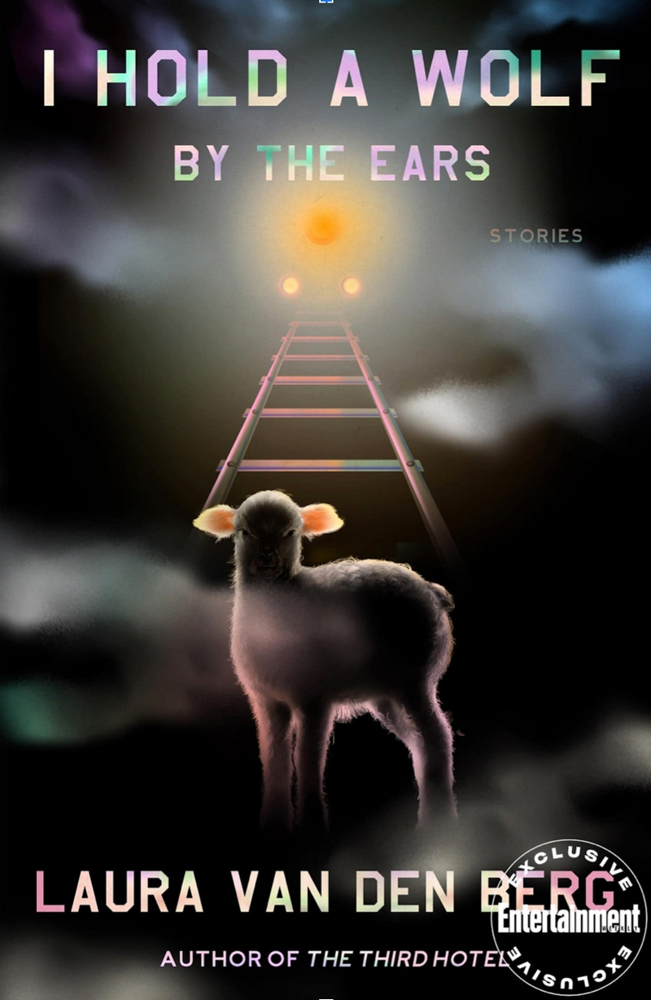
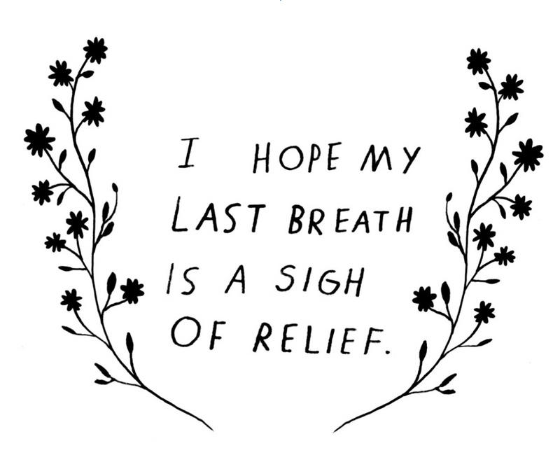
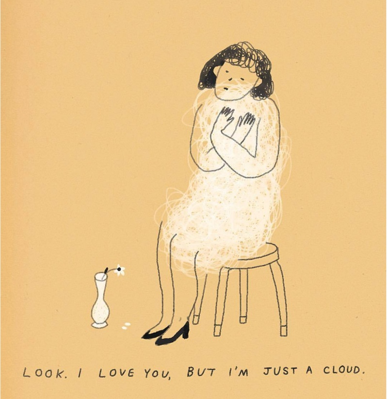

Na Kim is a NYC illustrator and art director at the publishing house Farrar, Straus and Giroux. Her book covers have been selected as one of The New York Times’ best book covers of the year for the past four consecutive years.
From a conversation with Mitchell Kuga
April 14, 2020
As a designer, what’s your definition of a successful book cover?
Success is when everyone’s happy: the editor, the publisher, the author. We’re designing books a year ahead of when they’re released, so if I can still be really happy with the book when it comes out? Then I’ve done a good job.
Given that lead time, how much of your job is forecasting design trends?
A lot. When publishers see one successful cover they want to follow that formula. But they forget that it’s probably going to be played out by the time it comes out. People usually don’t want to take risks with books they want to succeed, so I’m always thinking, How do I make it feel new, but also not scare editors into thinking that nobody will buy it because it looks different? How do I make it feel new and relatable at the same time?
It’s crazy because there are these trends in book covers where people see one big cover and they want everything to look like that for years, you know? Like the big type with the patterned background. I think Instagram is definitely responsible for a lot of that. People are like, “Oh, this is like, ‘grammable.” “Oh, big type patterns, blah, blah, blah.” If I see five books with the same color palette or the same type layout or something, I know, Okay let’s not do that. Even with my own work, if too many of my colors look the same I’ll try to be conscious of using different colors, but I won’t put that above making something reflective of what’s inside the book. Function comes before form—when you get both I think that’s when it comes closest to being successful.


Design-wise, what are you looking for when you read book manuscripts or drafts? Is it the general feeling of the text? Or a particular scene? For example, you've said that you wanted your cover for Mike Roberts’s Cannibals in Love to embody a particular line from the book, in which the main character, an aspiring novelist, wants his book to “express those negative spaces between two bodies, where the relationship breathes… belly-to-belly with the intimacy of a stabbing.”
I think for fiction, yeah. If there’s a line I particularly like or that captures the overall mood of the book, then I’ll save it or underline it and keep it for later, as something to think about. Laura van den Berg is another example of that, where in one of her stories there is a hyper-realistic marzipan cake decorated as a sheep, and I just thought the imagery so vividly contrasted with the title [I Hold a Wolf by The Ears]. So the cover is a way of referencing that without being too literal. And the way she wrote about the town, it was almost like a satirical painting. So sometimes the language really lends itself to visual imagery. Even if it’s not of a specific image, just the mood and the tone of the book can really carry into good visual representation. I’ll usually have one idea in the beginning, like something that really, really sticks in my mind, and I’ll start by executing that and let that kind of lead to other ideas as it develops.
On average, how many books do you read per year?
I think it’s easier to break down by season, because that’s usually the schedule we work off of. So I would say maybe like 15 to 20 per season, including my freelance projects.
Wow, so between 60 and 80 books a year?
It’s a lot of books, yeah. I rarely get to read stuff outside of what I’m working on.
How important is it that you like the books you’re designing covers for?
I mean, it definitely helps. Even if you don’t mean for it to, in some way or another you’re subconsciously judging the value of the book, and if you think it’s bad it’s going to be hard for you to give it a good cover. I’m not saying it ends up that way. But I think it’s something that you need to be conscious of. But sometimes horrible books have great covers too. There’s also just a lot of bad covers out there. And some of them are mine.
You've written about the time your boss asked you, while you were struggling with designing the cover for Jefferey Euginides’s Fresh Complaint: “Are you actually thinking about this book? Or are you just trying to make something cool?” And how that question forced you to confront your own narcissism. What are some of the questions you ask yourself before starting a project?
Why was I chosen to work on this book? Did they hire me for my sensibility? Or were they looking at my illustrations? Did they like some nonfiction covers that I did? So asking myself why I might’ve been picked for this project is a good place to start. Especially for any freelance covers, I’ll usually ask for references of my past work that made them want to hire me for this job, so that I get a better sense of what I should be bringing. Because my work varies quite a bit in terms of style or whatever, so that helps me narrow it down.

A question that I ask the editors is, “If you could sum this book up in three words, what would they be?” I think that’s a good way to narrow it down without giving me a specific idea, because when editors already have an idea of what [the cover] should be in their heads they’re less open to your interpretation. “Who is this book for?” is another good question. Like who’s the audience? Is this for someone like me, or is it for someone older or younger or cooler? And then I always try to remind myself that I’m getting paid to do this, you know?
It's a job.
It helps to have that dollar sign in front of it and be like, Okay, this is supposed to be work. Not just doing whatever the fuck I want. I mean, we’re providing a service, you know? We are there for other people. Design is not always a self-gratifying art.
Do you have any tendencies as a designer that you find yourself actively fighting against?
Sure. Because I have a background in illustration, one issue I had in the beginning is that illustration was the easiest solution for all my covers. Or hand lettering. My art director Rodrigo Corral really helped push me not to do that. There are obviously things that are easier or come more naturally to me, so just relying on anything is always something I have to fight against. You have to evolve and try things you might be bad at in order to get new results.
You’ve mentioned stumbling into your career as a book cover designer with “a little luck and a lot of help.” Was there a point along your journey from bartending to interning at Bloomsbury to working your way up to an art director when you realized, “Oh, I actually might be good at this thing?”
I don’t know. Every year I’m like, “Wow, I’m not going to have any good covers this year. I suck now.” So I don’t think that I ever feel like, “Wow, I’m really good at this.” And I’m not trying to be humble or whatever, I just think that it’s really, really easy to do a bad job, you know? So it’s just always there, the chance of being bad at it.

Is it one of those things where every new project feels you’re starting from nothing?
I wouldn’t say it feels like I’m starting from nothing. I think that the longer you do it, the more comfortable you get, and the chances of becoming complacent get higher. And it’s something I’m wary of. There are definitely moments, like those books that may not interest me as much, where I’m like, Okay, I know the formula for this. I can call it in and be done with it. Or I can actually try to put in the work and do a good job.
There’s also so many factors that go into if a book cover is good or not. There are tons of people who create really great covers, but they just never get approved because of where they work, or who the editor is, or maybe the sales team didn’t like it, or maybe it wasn’t pitched the right way. There’s so many places where it can go wrong and if that happens to you too many times, you start to design around what they want, and that always messes up your outcome of having a good jacket.
You're working within a system.
Exactly. I feel lucky that I work somewhere where there’s a lot of trust between the editors and the authors and the art department, so there’s less room for me to make work that isn’t appreciated or at least considered. I think that opens up more space to take design risks.
How long does it typically take you to design a cover?
After the conversation with the editor, we usually take about two weeks to design something. That’s when they expect to see a first round. But there are times where I’ve designed covers in hours and have been done in a day, and then other times that I’ve worked on a cover for like six months.
How many different concepts do you present?
For freelance covers it’s different because you don’t know the editors personally and there’s not a level of trust built-in, so I’ll send five to seven concepts. Whereas in-house, I can go to the editor and say “I have this idea, I think this is the way it should be,” and show them one cover. And if it works it works.

At this point, are you pretty good at knowing when a particular cover is going to be approved?
I never know. I think the last part is always the author. We care very much about them being happy.
Have you ever experienced imposter syndrome?
Everyday.
Does it get easier?
No. And nothing’s ever enough. But maybe that’s on me. I feel like fear is my biggest motivator.
What are you afriad of?
Um, I don’t know. Having nothing again. I mean I’ve based my whole life on survival. So even though everyone’s like, “Oh, you’re fine. Nothing’s going to happen.” Then it’s like, “Okay, guess what just happened? A fucking pandemic.” This is what I’ve been preparing for my whole fucking life. Because it’s true, everything can be taken away on a whim. All at once. So I try to remember that I always have to work hard no matter what. I can’t be comfortable. It’s 100% fear. Like basically there is no option for failure. It’s a punishing way to live.
In addition to your full-time job you regularly take on freelance book covers for other publishers, as well as freelance editorial work for clients like The New York Times and the New Yorker. How do you avoid burnout?
I have a pretty strict rule about not doing any work on the weekends. Obviously, with editorial illustrations, there’s a tight turnaround so I have to break that rule from time to time. But I want to say in the last three or four years I don’t work weekends, even if that means working a little bit later each weekday. Also, I work pretty quickly in terms of executing. I spend a lot more time thinking about the work than sitting in front of a computer, which helps me.
When you say you’re “thinking about the work,” does that just mean as you’re living your life? Like a sort of prompt that you’re carrying with you?
Yeah, I’ll just be thinking about it throughout the day.
How does maintaining a practice around making personal work inform your role as a designer?
I try to approach it on a smaller scale. It should be fun. I’m rarely like, Okay, today’s the day I’m going to make personal work. It’s more like, Okay, I have an idea. Or usually at the end of the work day I’ll be like, Okay, I have some little thoughts left. Let’s do this. So even if it’s an hour in one week or five minutes at the end of each day, I take time to make something for myself. Even if no one sees it or if it’s complete poo poo, I still think that the exercise is really valuable to me. And I feel like I share more of that work than I do my professional work. I also feel like a lot of times the personal work leads to more work anyway.
How so?
It’s like I was saying earlier about unapproved covers that are great that no one sees: when there’s no pressure, it’s a lot easier to make something good and a little more true, if that makes sense. Especially with Instagram and stuff like that, people only have the attention span of a second. So if they’re scrolling and they see something and it makes them think something or feel something or connect to something, I think that people respond to that a little bit more.

I was first introduced to your work in the early days of Tumblr, where you were doing these sort of diaristic illustrations and paintings that reflected a certain mood or feeling or state of mind.
That also coincided with my single life. My single life in my early twenties. So I mean it’s definitely really, really emo. But emo really thrives on Tumblr. That’s the kind of work I wanted to make at the time. This is before I had any kind of career or whatever. I wasn’t getting hired to make anything, so I was like, Okay, I’ll still make it and put it out there. Someone will laugh about it, you know? I didn’t give a fuck. I had nothing to lose.
Did it help you feel connected to an artistic community in some way?
Yeah, I mean I guess Tumblr was the prototype for Instagram, so that’s where I was posting my work. To at least get it out there. I think it made me feel less shy about sharing my work. What I appreciate about Instagram is that it takes the preciousness out of it. You’re not like, Oh my God, this is a beautiful piece of art. You just kind of learn to let it go and move on. And I think Tumblr was where I learned to do that.
What’s the story behind Panolo Blahnik, a collection of bread shoes you make and shoot with your co-worker June Park?
Our office is in the Financial District and the food options there are absolute trash. Everything’s a bowl. So it just got really depressing, and there’s this place in our building where basically the whole company gets lunch, and it’s just so sad. They give you free bread sticks so I was just trying to cheer June up by, you know, sticking a fork in and pretended the breadsticks were little dancing shoes. And that’s how Bread Shoes started. I was just playing with my food.
I mean it’s a good visual practice. And it’s nice to just get excited about something, you know? I feel like there are a lot of artists who do this all the time, like Christoph Neimann is a really good example. He’ll look at a fucking croissant and then turn it into a telephone booth or something. He can just see past what’s in front of him and abstract everyday things into different images. I just think being interdisciplinary is a good thing, especially as a designer. And it’s fun. You just want to have fun making work. And if you have side projects where you can have fun, I feel like it takes the burden off of your day job, of being like, “Oh, I don’t feel fulfilled by this, blah blah, blah.” You can just take it for what it is and be grateful you’re getting paid to do something you’re good at.

Na Kim Recommends :
Medicare for All.
Laura Van den Berg's I Hold a Wolf by the Ears.
Bryan Washington's writing on food.
Listen to your body.
The Hours sountrack